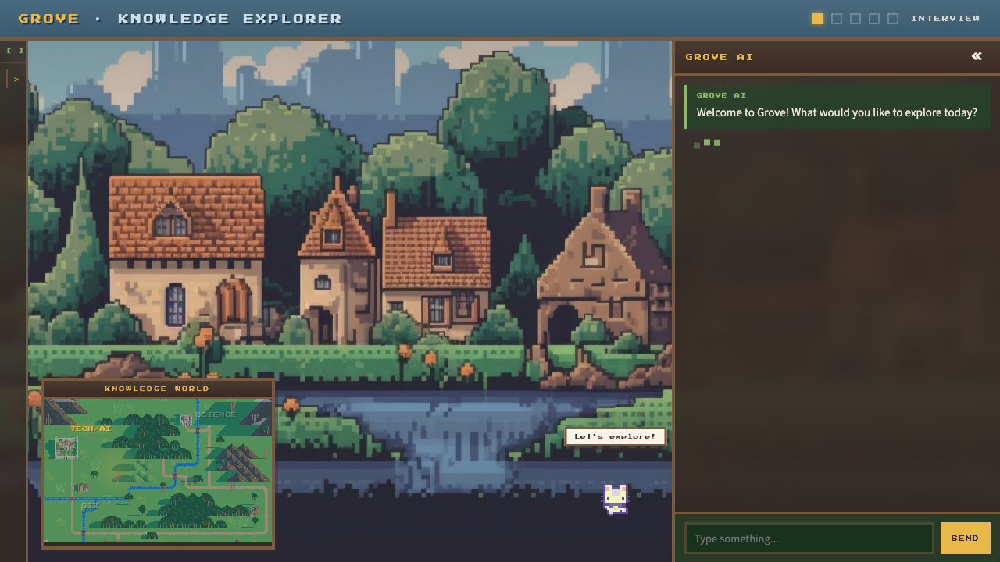
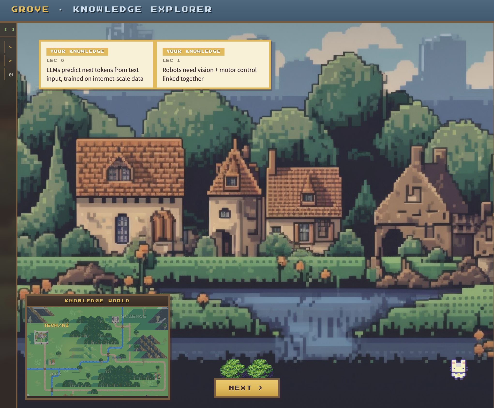
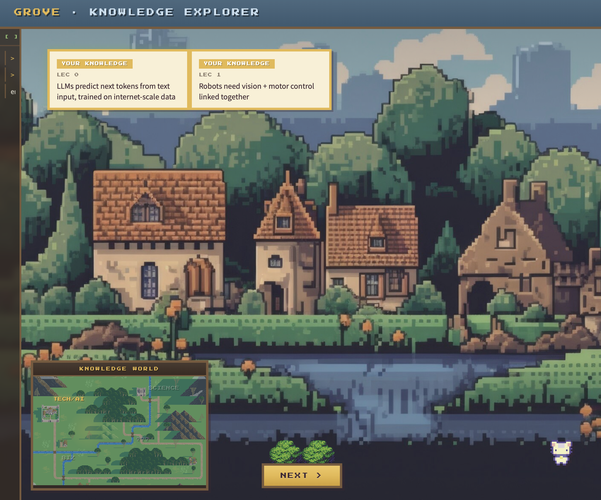
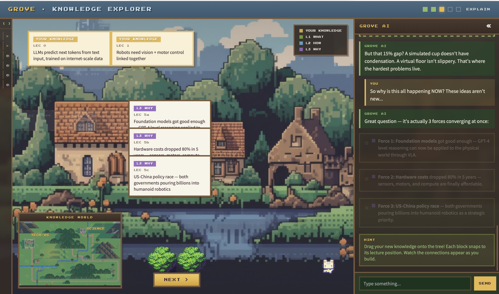
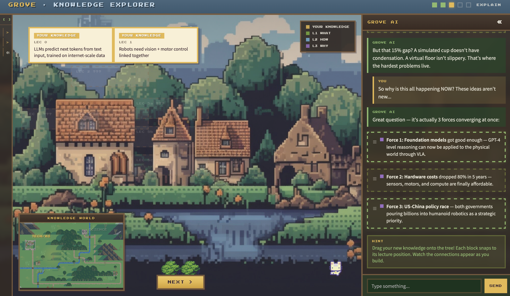

AI now handles almost any task on demand. This quietly undermines the intrinsic drive to learn: if the answer is always one prompt away, sitting with confusion starts to feel irrational. Learning has always had an inward pull — the desire to genuinely understand the world — but AI commoditizes outputs and short-circuits that pull. The risk isn’t that AI replaces thinking; it’s that users never feel the need to start.
AI has recalibrated our tolerance for effort. When every question gets an instant, polished answer, spending time learning something “the long way” starts to feel like a waste. This creates a UX problem: the momentum needed to actually absorb knowledge — reading, pausing, reflecting — collapses before it begins. The user experience of learning must compete with the frictionlessness of just asking.
Even when users do engage with AI-generated content, depth rarely follows. Most people don’t read everything a model returns — they skim, extract, and move on. LLMs produce polished surfaces, not comprehension. The result: shallow learning that feels complete, knowledge that doesn’t stick, and a growing gap between exposure and understanding.
Inspired by Hyperknow — a learning agent built by Columbia undergrads that proved demand for deeper AI-powered learning — we asked a different question. Hyperknow solves what the AI can do: deep explanations, personalized memory, study materials. We focused on how the user experiences it.
Solves: “Why bother” — erosion of motivation
Grove wraps AI answers with moments that require active engagement. Before revealing an explanation, it asks what you already think. It asks follow-up questions you need to respond to before moving forward. The AI doesn’t just answer — it makes you a participant in the exchange.
Solves: Diminishing patience — the attention gap
Instead of a chat log that disappears, every concept you engage with becomes a block you place on a living knowledge tree. The tree grows visually as you learn — color-coded by depth, connected by relationships. Progress is something you can see and build, not just feel.
Solves: The skimming trap — consumed, not understood
Your knowledge has a shape — and most of the time you can’t see it. Grove maps it. As you explore topics, a knowledge map lights up territory you’ve covered and leaves the rest dark. When your questions push into a new area, that region illuminates — making visible both what you’ve mastered and what lies just beyond. The interface doesn’t just tell you what you don’t know; it shows you the boundary, and invites you to cross it.
+58% Sense of Agency, +44% Intent Alignment, +75% Perceived Ownership when users have productive friction in AI interactions.
AI mimics cognitive processes, targeting the hardest-to-rebuild skills. Decay happens without the user’s awareness — no failure signal.
AI’s variable output quality creates variable-ratio reinforcement — the same mechanism that makes slot machines addictive.
78.6% of students unaware of AI policies, yet 67% rate AI ethics as career-important. Users want agency but lack tools.
Users prefer engaging, structured learning over passive consumption — they’d trade “infinite scroll” for intent-aligned content.
Growing a knowledge tree + monthly progress summaries creates genuine achievement and drives continued use.
Users will accept +18% task time for meaningful engagement. Productive friction transforms passive consumers into active builders.
Visual knowledge trees align with how people naturally want to organize understanding — not linear notes, but connected maps.

User Test Feedback 1 (n=5 users): users need clearer guidance and tools to effectively review and revisit learned concepts.

Click here to set up review reminding notifications
Click here to zoom in & zoom out “Knowledge World” for reviewing and exploration

The concepts are organized in order of increasing difficulty
User Test Feedback 2 (n=5 users): automated monthly summaries help users track progress and stay motivated to continue learning.

Number of concepts you have explored in the last month.
The frequency with which you have contributed your own valuable insights.
The areas of knowledge you have explored most extensively.
…
Motivate users to continue using Grove & meet satisfactions of self-achievements
User Test Feedback 3 (n=5 users): users are unclear how to structure and connect concepts, highlighting the need for more intuitive interaction design.

Users experience confusion about where to drag these “blocks,” indicating that the design needs clearer guidance and more intuitive visual cues.
Based on Feedback 1: Users couldn’t find review tools → Added auto-review button, scheduled reminders, Knowledge World zoom, difficulty-sorted concepts.
Based on Feedback 2: Users lacked motivation signals → Added monthly dashboard showing concepts explored, insight frequency, knowledge breadth.
Based on Feedback 3: Users confused about block placement → Added snap-to zones, visual connection cues, guided structuring hints.